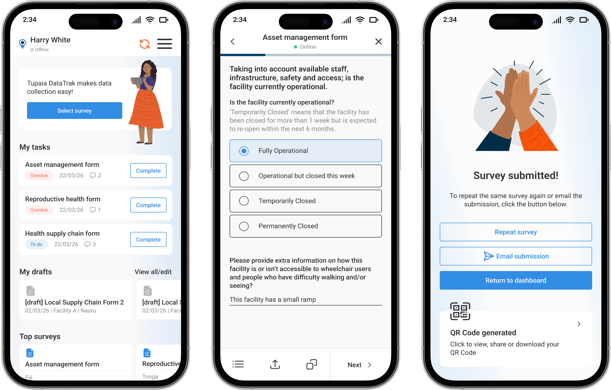
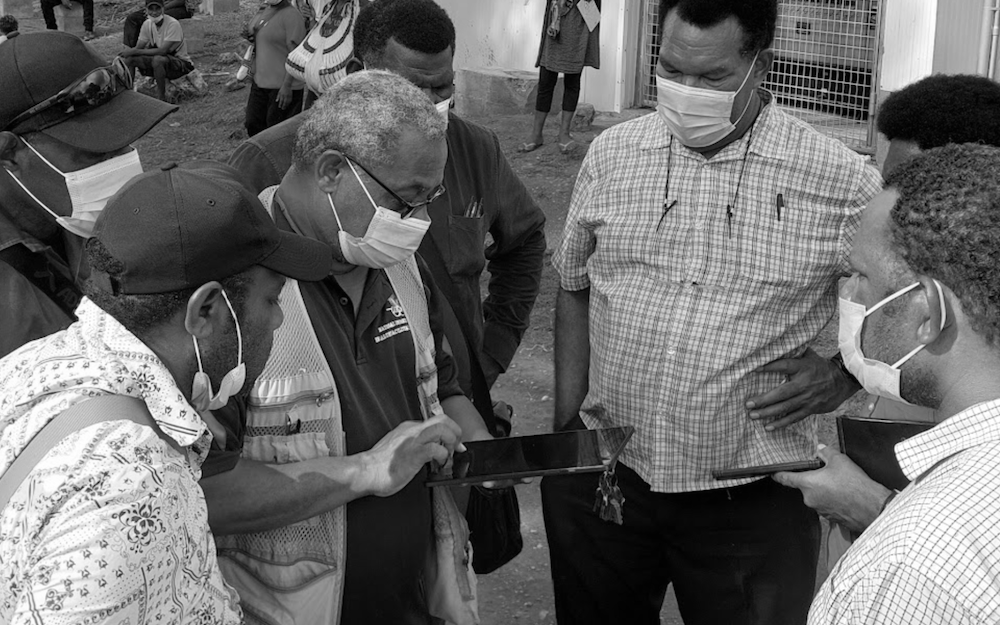

Case study overview
How I designed Tupaia DataTrak to empower health workers in low-connectivity, low-digital-literacy environments. And how that reduced form completion errors and enabled reliable offline data capture across multiple Pacific Island countries.
Context & Challenges
The Pacific Island region is home to some of the world's poorest health outcomes. Public health in these regions relies on accurate data collection carried out by field workers who visit communities across remote villages, atolls, and islands. They use mobile technology to record a range of data points from vaccination rates to facility conditions. However, the environment in which these field workers operate is radically different from what most applications are designed for.
I was tasked with designing a health data collection app called Tupaia DataTrak used across multiple Pacific Island countries by Ministries of Health and international development agencies. The app had to overcome three key challenges:
1. Connectivity is unreliable.
Field workers frequently enter areas where internet connectivity is not available for hours or even days. Therefore, we had to design an app that could function offline in order to minimize data loss and user frustration.
2. Digital literacy varies.
Our user base ranges from international development professionals to health workers in communities where a smartphone app is a new experience for many people. We could not assume a level of tech literacy for our users.
3. Data accuracy is non-negotiable.
Health data informs government policy and resource allocation. Inconsistent data entry practices caused by confusing form layouts and unclear input expectations can undermine the reliability of the entire dataset.
Overcoming these three challenges was important as inaccurate or missing data meant misallocated resources, and ultimatly, communities falling through the cracks.

Research & Discovery
What I Already Had
We were already collecting health data across the Pacific, which gave me a great starting point. I had direct access to real users and real feedback from the field. I started by reading through past support tickets, field reports, and stakeholder feedback to understand the most common failure points.
Competitive Analysis
I analysed data collection tools used in similar contexts. Both in and out of the global health space such as general form builders and field survey tools. I wanted to look for two things: patterns in how other tools addressed offline-first data collection, and patterns in how those tools failed that I thought our users might be particularly vulnerable to, given their environment and situation.
User Interviews
I conducted individual interviews with field workers and program managers across Samoa, Tonga, and Nauru, and asked them questions around three main topics:
- Workflow observation: How do you actually collect data in the field? Where are you physically? What does your environment look like?
- Failure points: Where does the current workflow break down?
- Workarounds: What are you doing manually to overcome the shortcomings in the current workflow?
The workarounds, however, were the most telling. The workers had to physically write out their notes, send information via text message to colleagues who had a stronger signal, and even re-enter entire surveys from memory since their sessions had timed out.
Health workers in the Pacific need a mobile app they can depend on to work without internet, that they can learn without training, and that prevents errors before they happen so they can focus on the people in front of them, not the technology in their hands.
Personas
Kaia Tala
The Community Health Worker
Age 42 · Data Collector, Ministry of Health, Samoa
Kaia is a Pacific Islander with a degree in Public Health and has been immersed in her community. She understands local customs and languages like the back of her hand, and this makes her extremely valuable in this role. However, Kaia finds digital platforms to be extremely frustrating and complex. Her internet connectivity is spotty, and the forms she needs to complete are long and time consuming. She needs technology to support her, not hinder her.
What she needs from DataTrak
An interface simple enough that she never feels lost. Offline capability she can trust without thinking about it. Forms that guide her through complex data entry without overwhelming her.
Nathan Walker
The International Development Associate
Age 25 · Australian Institute of Health and Welfare, based in Tonga
Nathan has technical skills and experience in international development. He's comfortable with technology and has experience in international development, but like Kaia, his internet connectivity is spotty, and his experience will be hindered by this. His need for DataTrak will be different, however, since he will have to train people to use the technology, ensure the data they collect is accurate and robust, and navigate the cultural nuances of working in a community that is not his own.
What he needs from DataTrak
Efficient form submission for long surveys. Highly configurable form features. A tool that is intuitive so that minimal training is required for local staff.
Together, Kaia and Nathan define the design tension at the heart of this project: the app needs to be simple enough for a first-time smartphone user yet powerful enough for an experienced development professional. Both of whom need it to work without internet.
Design Principles
Offline is the default, not the exception.
All assumptions should be made as if the user has no internet connection. The presence of internet connectivity should not be a consideration when trusting the application.
Progressive disclosure over feature density.
The application should not show the user everything at once, as that can lead to overwhelming forms that resemble tax forms, not conversations.
Error handling should be robust but ideally seldom.
Validation should prevent mistakes in real-time. If a user can enter bad data, that's a design failure, not a user failure.
Respect the context.
This application is being used in people's homes and communities, often in sensitive health situations. The interface should be unobtrusive, clear, and never make the worker look uncertain in front of the community member they're serving.
Sitemap
Design Exploration - Low Fidelity
I began with low-fidelity wireframes, which enabled me to explore layout, flow, and information hierarchy without getting caught up in the finer details of the visual design.
Key Flows Explored
- Registration & onboarding - adding employer/position context upfront for permissions handling
- Dashboard & navigation - displaying drafts, top surveys, recent surveys, and assigned tasks immediately
- Survey selection & form completion - step-by-step progression with 'jump-to' navigation for sections
- Offline indicator & sync behaviour - indicating connection status during key times
- Settings & account management - project/country switching & access requests
- Submission confirmation & QR codes - closing the loop on completed surveys with verifiable results
At this stage, I tested basic hypotheses such as: "Can a new user easily start a new survey?" "Is the form navigation intuitive, so the user knows where they are and how much is left?"
I iterated through these wireframes with internal stakeholders before moving to high fidelity.

Solution - High Fidelity
Offline-First Architecture
We assume the app will be used offline most of the time. We provide a clear but non-intrusive indicator of the app's online status. We use a green dot for online and grey for offline, which is visible in the header of every survey screen, the dashboard and on individual submitted surveys to show sync status. We sync data locally, which means as soon as the user comes online, the data syncs automatically, giving the user a smooth experience while working offline. We provide a gentle confirmation for the user once data syncs but are never blocked from working.
Design decision: I avoided any aggressive "you are offline!" messages. In this context, being offline is normal. The UI treats it as a state, not an error.
Intuitive Navigation & Dashboard
On login, the user lands on a personalised dashboard showing their assigned form tasks, drafts, top surveys, recent responses, a playful gamified leaderboard and an activity feed from their team. The information architecture was designed to have the most used features such as starting or resuming a survey, never be more than two taps away from the home screen.
The gamification leaderboard was included to encourage engagement and friendly competition among field teams. This was a direct response to stakeholder feedback about motivation in the field.
Guided Form Completion
The survey forms are divided into sections with a page-by-page progress indicator at the top of the screen. Each section uses visually distinct and configurable groupings, large touch targets, and clear labels.
Key form design decisions:
- Radio buttons and select fields have been used wherever possible to avoid any free-text entries (improving reporting and speeding up form completion)
- Forms have been organised in folders where possible to speed up form selection and shorten lists
- Forms have their own sticky toolbar to enable quick and consistent actions such as 'save & exit', 'jump-to' and 'share' to allow form sharing with other team members
- Clear font hierarchy to support multiple levels of information including headers, subheaders, instructional text, question label and input
Review & Submission
Before submission, users see a review screen summarising their entries with the ability to go back and edit any section. After successful submission, the app generates a QR code that is connected to the response enabling sharing of responses with various stakeholders.
The gamification of the process is reinforced with a celebratory success toast "Congratulations! You've earned a coconut!" accompanied by a friendly hand-drawn illustration of a high five. This provides positive feedback for completion of work.

Results & Impact
DataTrak is now in active use across 12+ Pacific Island countries, aiding health workers in collection of critical public health data.
Project Outcomes
- Field workers reported that they felt more confident using the tool independently
- Training time for new users was greatly reduced
- Supervisors reported better data quality and completeness
- Support tickets related to data loss and sync issues were decreased substantially
Reflection & Learnings
What I'm proud of
- Designing for a demographic that is often overlooked by mainstream product design and doing so with genuine respect for their context, constraints, and culture.
- Designing an offline-first product that treats disconnection as the norm, not the exception.
- Designing an experience simple enough for a first-time smartphone user yet robust enough for professional-grade data collection.
What this project taught me
This project has taught me that the range in which user needs and capabilities can differ is huge. When users range from first-time smartphone users to seasoned digital professionals, the difference between adoption and abandonment can often come down to having clear intuitive user flows